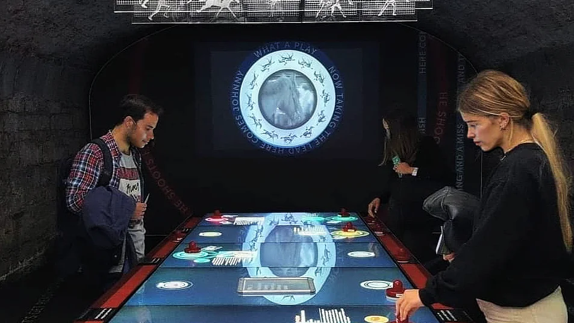
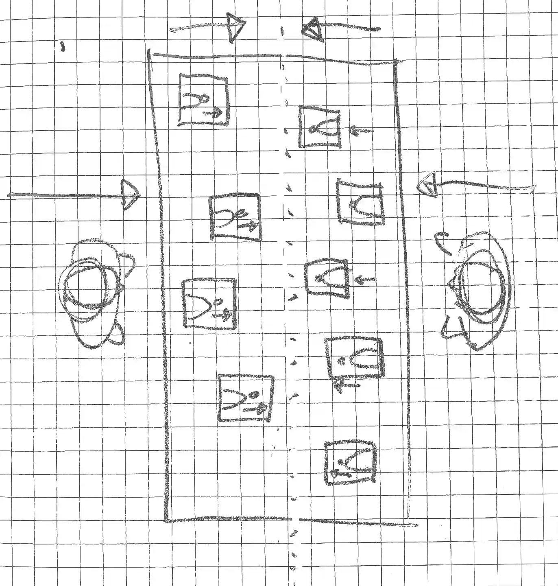
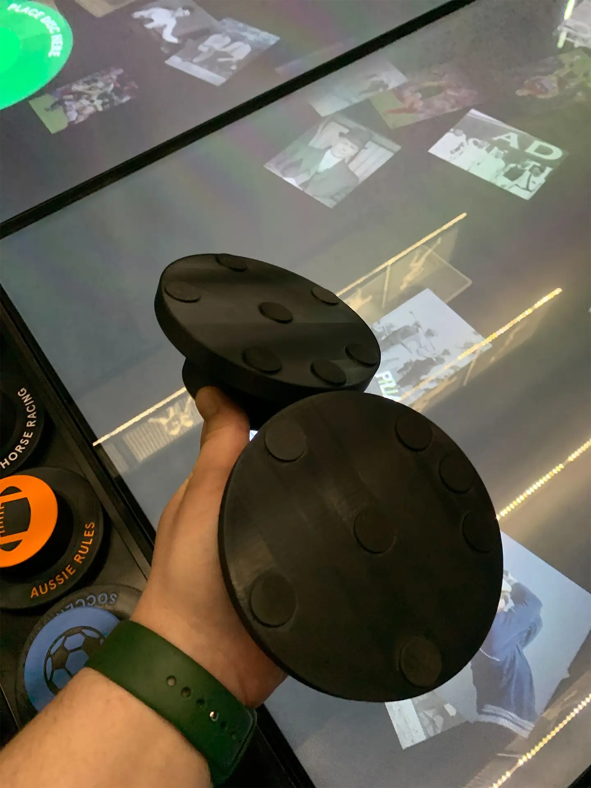
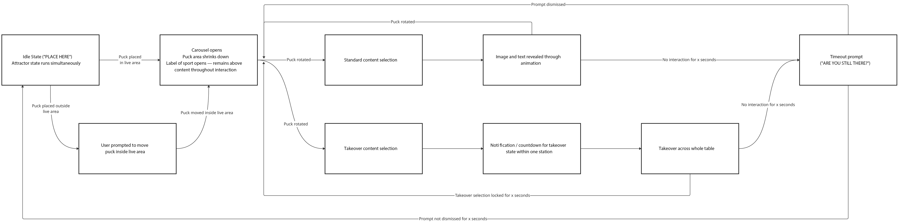
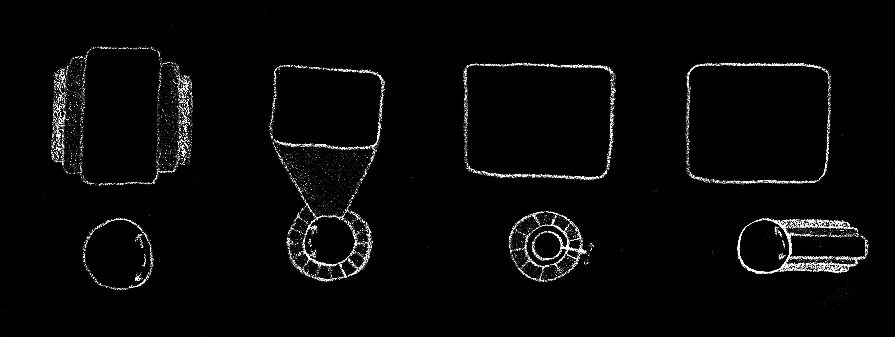
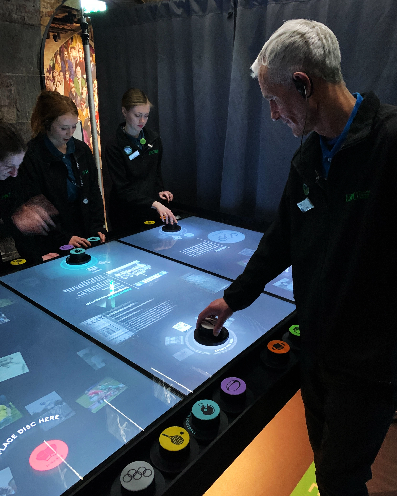
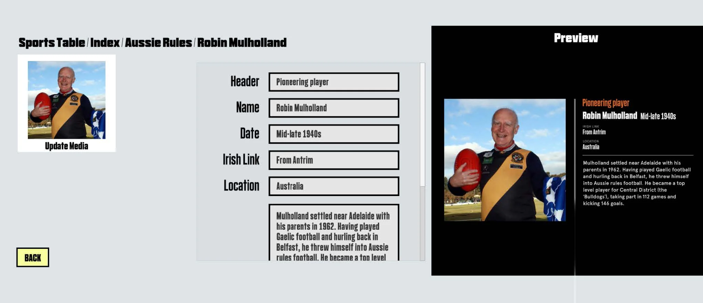

Designed and produced with ISODESIGN
The Sports Table at EPIC The Irish Emigration Museum is an large scale interactive installation, allowing visitors to explore the influence of the Irish diaspora on sports around the world.
My role was to lead UX/UI design, from research to delivery.
The outcome was a key visitor interactive now experienced by over 400,000 users per year.

Fáilte Ireland's tourism industry barometers repeatedly highlighted that inbound cultural tourism has been severely bottlenecked by limitation on available accommodation.
Business need With the volume of inbound tourists capped, commercial growth necessitated a strategic pivot toward optimising secondary spend. Because secondary spend scales with time-on-site rather than ticket volume, it was essential to develop a new experience to drive deep, repeat engagement.
Interaction model The UX was required to be compatible with proprietary 'puck' controllers developed by Sysco Productions for the DISPLAX capacitive touchscreen system.
Long-term flexibility The client team required ease of content update over a timescale of multiple years, with no ongoing maintenance.
Shared experience To promote dwell time, I explored how we could leverage the scale of the hardware format to create a shared experience between groups of visitors.

Understanding the hardware I ensured regular testing of iterations with final hardware, to assess solutions at scale with the unique interaction model.

Principles for interaction The interactive was required to create an engaging, tactile experience for sustained immersion.
Scoping UX/UI The design solution needed to be tightly scoped enough for simplicity of updating all elements through a CMS, and robustness to run for an extended timeframe without maintenance.
Interaction model First steps involved collaborating with a developer on establishing the user flows which would form a basis for further interaction design.

Sketching interfaces Idea generation began with research into existing carousel-based design patterns, from which I developed initial sketches.
The design pattern which emerged was to treat the carousel imagery as thumbnails, with triggered content displayed independently to maximise scale.

Wireframing Given the client's concerns about future-proofing, I opted for a design system that would enable a relatively simple tech stack, for compatibility across any potential future hardware or software changes.
Having worked initial mid-fidelity prototypes up further in discussion with developers regarding CMS integration, this version was presented to key stakeholders.
Aspects of the design, such as typefaces, drew from the design system of the wider museum wherever possible.
Higher fidelity wireframing The next phase worked up higher-fidelity visuals for more detailed interactive prototypes.
We tested prototypes regularly with visitor experience staff at the museum, to sense-check intuitive interaction and ensure content was communicated effectively for the user profile.

UX/UI for CMS Given this interface would be used rarely and never experienced by end users, I chose not to invest resource into the UI of the CMS, instead opting for generic Unity components for speed of prototyping.

13% increase in ticket pricing without reducing visitor numbers.
9% increase in visitors over the year following delivery.
4.8 average rating by users over the year following delivery.
Positive feedback from visitor experience team.
Designing for bespoke hardware integration.
Designing interactive experiences at scale.